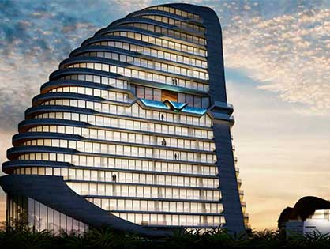

Tú sostienes el llavero, nosotros entregamos la llave perfecta.

¿Qué es el sector inmobiliario?
El mercado inmobiliario es el conjunto de las acciones de oferta y demanda de bienes inmuebles. La naturaleza de estos bienes puede ser muy distinta, diferenciándose entre bienes de naturaleza residencial, comercial, industrial, urbano, etc. Todas las operaciones que se produzcan relacionadas con la compra y venta de este tipo de inmuebles forman el sector inmobiliario, esencial para el desarrollo de una economía sostenible de un país.
El mercado inmobiliario, sin embargo, no solamente incluye esta oferta y demanda de bienes inmuebles, sino que comprende otros muchos ámbitos importantes para el sector. Nos referimos, sobre todo, a la promoción inmobiliaria, a la inversión que puede ser realizada por empresas o particulares y la financiación, es decir, la acción que permite la adquisición o desarrollo de proyectos inmobiliarios.
Debemos destacar que el mercado inmobiliario no es inmóvil, sino que está sujeto a cambios y evoluciones que pueden afectar directamente a la propia economía, tanto a nivel general como particular. En este sentido, estas fluctuaciones de auges y caídas del mercado y sector inmobiliario también influyen en los cambios del precio de la vivienda, que puede sufrir variaciones importantes tanto al alza como a la baja.
Una de las mejores alternativas para quienes quieren tener presencia en el sector inmobiliario en sus carteras son los fondos de inversión. La inversión en este sector puede realizarse de dos formas: una de ellas son los fondos que invierten de manera directa en activos inmobiliarios destinados al alquiler y que, por tanto, no siguen la misma tendencia que el resto de fondos financieros. La otra forma se basa en la inversión de fondos inmobiliarios indirectos, que seleccionan valores que están relacionados de un modo u otro con empresas del sector inmobiliario.
Nuevos proyectos
SLS CANCÚN
Bienvenido a SLS Cancún, un santuario frente al mar que cuenta con 45 suites, vista al mar y una decoración de clase mundial. El vibrante club de playa privado es impresionante. Experimente la escena junto a la piscina, disfrute del lujoso spa y disfrute de una cena en el restaurante de renombre internacional, Leynia. SLS Cancún también cuenta con un puerto deportivo privado, un campo de golf de 18 hoyos diseñado por Tom Weiskopf y acceso exclusivo a la colección sbe y al conserje global. Este destino sin precedentes espera para sorprenderlo.
- Ubicación: Cancún
- Desarrolladores: Grupo Chartwell

SHARK TOWERS
Un verdadero monumento al depredador que ha gobernado el océano mucho antes de que estuviéramos aquí.Para concebir el alma de una estructura de esta magnitud, fue imperativo combinar la experiencia de diferentes áreas como Arquitectura, Diseño, Tecnología, Ciencia y Biología. El resultado es un estilo de arquitectura con una noble propuesta que cambia las condiciones en que la gente quiere vivir, permitiendo que la naturaleza se manifieste con gracia en cada detalle.
- Ubicación: Cancún
- Desarrolladores: Grupo LUXIMIA